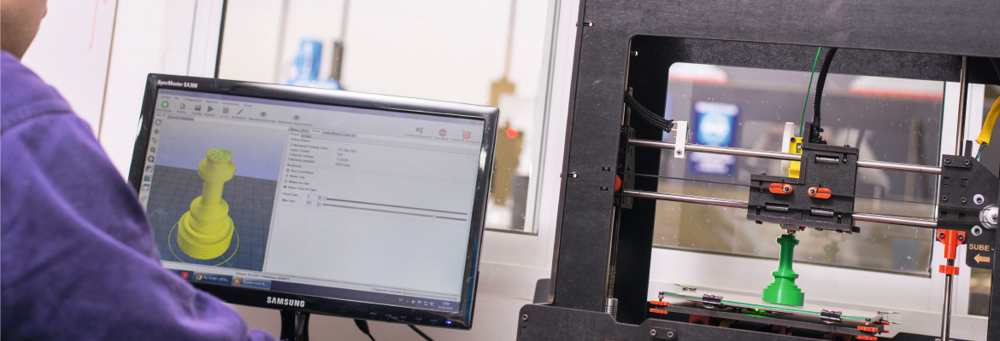
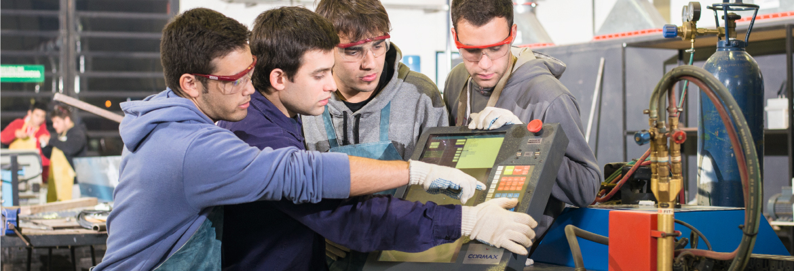
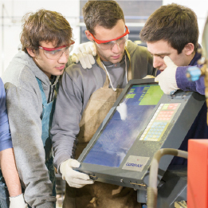
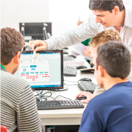
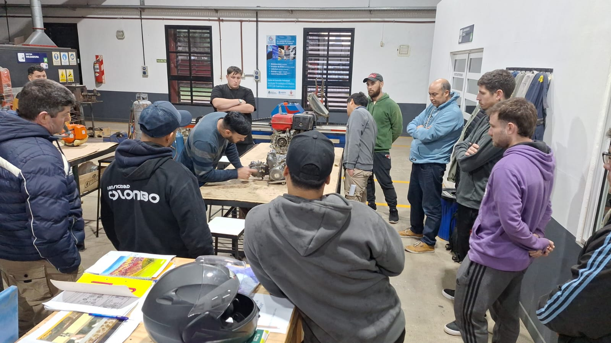
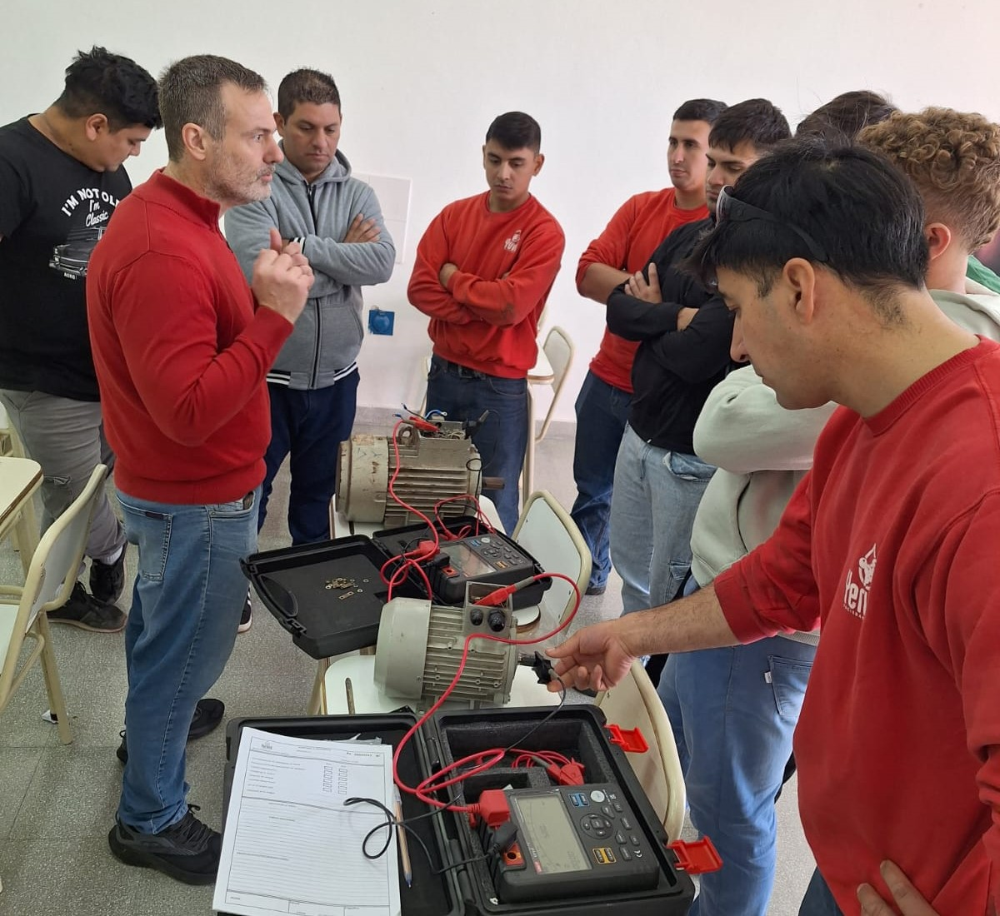
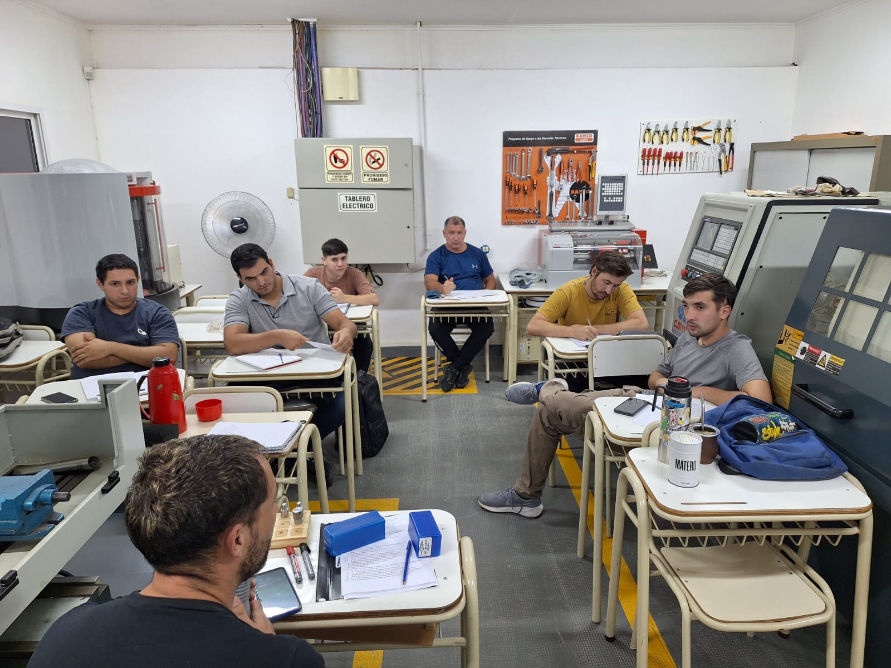
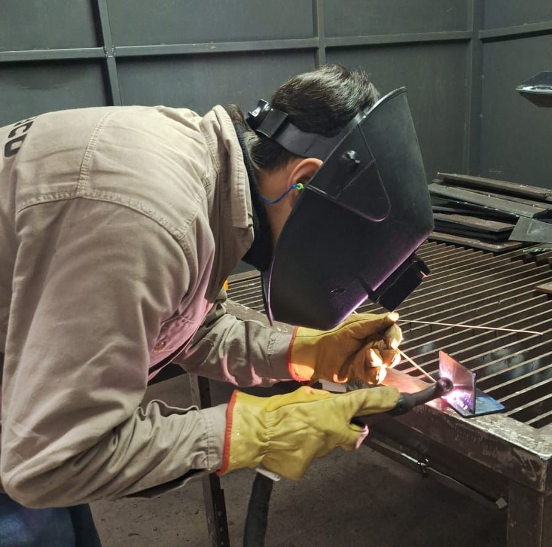
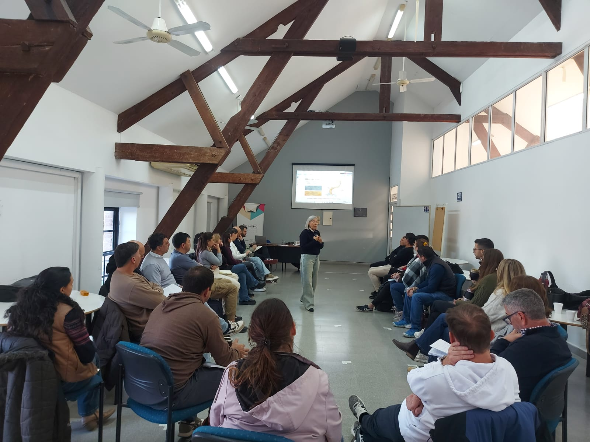
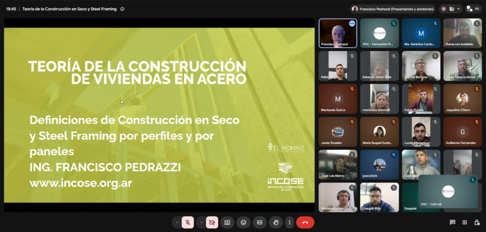

FORMACIÓN
Espacios propicios para el logro de aprendizajes significativos en los distintos niveles organizacionales: tecnicaturas terciarias, formación profesional y capacitaciones.
NUESTRA PROPUESTAUn proyecto educativo de articulación público-privada que responde a las necesidades de formación práctica y brinda servicios para la mejora de la competitividad de las pymes de la región.


Es un proyecto educativo de articulación público-privada, que surge y se sostiene para dar respuesta a necesidades de formación práctica y brindar servicios para la mejora de la competitividad de las pymes de la región.
+ Acerca del institutoEspacios propicios para el logro de aprendizajes significativos en los distintos niveles organizacionales: tecnicaturas terciarias, formación profesional y capacitaciones.
NUESTRA PROPUESTAServicios tecnológicos, de asistencia técnica y gestión de financiamiento para que las empresas se adecuen a los cambios con eficiencia, competitividad y rentabilidad.
NUESTRA PROPUESTAGeneramos espacios de intercambio y formación para fidelizar la relación con el sector productivo a través del programa Empresas que Educan.
Contribuir al fortalecimiento del sector productivo local y regional a través de la excelencia en formación del talento humano, como así también, brindando servicios de asistencia técnica y tecnológica que acompañe su desarrollo e innovación.
Ser líderes a nivel local y regional en la formación del talento humano como así también en el acompañamiento del sector productivo brindando servicios y asistencia técnica.
Vínculos del ITEC con organismos y redes a nivel nacional, provincial y regional.
Espacios que permiten concretar uno de los principales objetivos: formación práctica de los alumnos.
Sector de máquinas y herramientas, sector de soldadura, laboratorio de CNC y laboratorio de metrología dimensional.

Laboratorio de química y planta piloto de biodiesel para la formación en procesos industriales y energías renovables.
Laboratorio de diseño asistido por computadora (CAD) y laboratorio de informática de gestión.

Laboratorio de neumática e hidráulica, laboratorio de electricidad y electrónica y laboratorio de física.
Tecnicaturas terciarias, formación profesional y capacitaciones.
Conectan diariamente la educación y el trabajo. Responden a demandas tanto sociales como productivas.
Ver TecnicaturasCursos y programas orientados a fortalecer capacidades en los actuales y futuros trabajadores.
Ver CursosFormación, actualización y perfeccionamiento de personas que trabajan en organizaciones.
Ver CapacitacionesLas tecnicaturas terciarias conectan diariamente la educación y el trabajo. Responden a demandas tanto sociales como productivas.
Preparamos al alumno para desempeñarse como mando medio dentro de la estructura organizacional. El egresado actuará como vínculo entre los niveles gerenciales y operativos, y trabajará en temáticas propias de cada carrera, en aspectos comunicacionales y de planificación.
El técnico puede implementar, evaluar, organizar y conducir diversas áreas organizacionales: administración, comercialización, producción, finanzas, compras y ventas.
Descargar Plan de EstudioEl técnico puede gestionar el mantenimiento del equipamiento industrial: eléctrico, hidráulico, neumático, electrónico y de instalaciones frigoríficas.
Descargar Plan de EstudioEl técnico puede diseñar, proyectar, evaluar y gestionar sistemas energéticos para posicionarlos en un nivel óptimo de eficiencia y racionalidad en su uso.
Descargar Plan de EstudioEl técnico está capacitado para organizar y gestionar la distribución y despacho, el transporte, la recepción y el almacenamiento de bienes, como así también la información administrativa vinculada a estos procesos.
Descargar Plan de EstudioEl técnico está habilitado para diseñar, construir y verificar artefactos de software de complejidad media, respondiendo a especificaciones de sistemas de información.
Descargar Plan de EstudioEl técnico está habilitado para aplicar métodos seguros, asesorar en la implementación de programas para la salud de los trabajadores, supervisar riesgos, realizar auditorías e impartir cursos.
Descargar Plan de EstudioLos títulos emitidos por el ITEC, como Instituto de Educación Superior Privado Incorporado Nº 4085 por el Ministerio de Educación de la Provincia de Santa Fe y respondiendo a las normas fijadas por el Consejo Federal de Educación, tienen validez nacional y reconocimiento en todas las jurisdicciones.
Cursos y programas orientados a fortalecer capacidades en los actuales y futuros trabajadores. Aprendizaje y perfeccionamiento de un oficio o profesión.
Promovemos el enfoque de "formación basada en competencias": mayor integración entre el proceso formativo del alumno y su futuro desempeño como trabajador, en una situación real de trabajo, con espacios preparados para la formación práctica.
Permiten al alumno estructurar y profundizar su formación a través de una secuencia de cursos. Los objetivos de cada formación surgen en términos de capacidades necesarias para la actividad o especialidad elegida.
CONOCÉ NUESTROS TRAYECTOS FORMATIVOSCursos de formación profesional para el desarrollo de competencias laborales, impulsados por el Ministerio de Trabajo y Empleo de la Nación junto a la Red de Centros de ADIMRA.
VER CURSOSFormación, actualización y perfeccionamiento de personas que trabajan en organizaciones, para responder a demandas actuales de los puestos de trabajo.
Ofrecemos diversas metodologías: seminarios, talleres y cursos, generados a medida de la empresa (capacitaciones internas) y abiertas al público en general.
Para profundizar la experiencia obtenida en el puesto, vinculándola con conceptos y fundamentos técnicos de las tareas que realiza.
CONOCÉ NUESTROS TRAYECTOSCursos, talleres y seminarios de actualización y perfeccionamiento para empresas y público en general.
INSCRIBITE A NUESTRAS CAPACITACIONESPara que las empresas se manejen con eficiencia, competitividad y rentabilidad.
Ensayos destructivos (tracción, dureza de metales), no destructivos (tintas penetrantes, mediciones por ultrasonido) y metalografía, para que las empresas cumplan con los estándares de calidad del mercado.
Asiste en el desarrollo de proyectos orientados al fortalecimiento de actividades productivas y comerciales, al fomento de innovaciones y a la transmisión de tecnología. Facilita la gestión de programas de organismos nacionales, provinciales y locales.
Servicios de consultoría y asistencia técnica a medida en gestión de RR.HH., diseño e implementación de sistemas y normas de calidad, reingeniería de empresas, automatización y control de la producción, planes de negocio y de marketing.
Cursos, proyectos y actividades del ITEC.

La propuesta vuelve a dictarse en el ITEC en respuesta a la demanda de las empresas de la región.
Leer más
El ITEC y Yeruvá S.A. desarrollan conjuntamente una propuesta de capacitación.
Leer más
Trabajadores de empresas de Esperanza y San Carlos Centro fortalecen sus competencias.
Leer más
Trabajadores de empresas metalúrgicas de Esperanza y Franck completaron esta formación.
Leer más
Desde el Instituto Tecnológico El Molino llevamos adelante el taller con la comunidad.
Leer más
Con una destacada participación de profesionales y técnicos vinculados al sector.
Leer másLa RED de Centros Tecnológicos de ADIMRA se posiciona como una red federal de tecnología y formación de calidad, a disposición de las empresas y trabajadores metalúrgicos de todo el país.
Conocé la RedUn integrante de nuestro equipo se comunicará con vos a la brevedad.